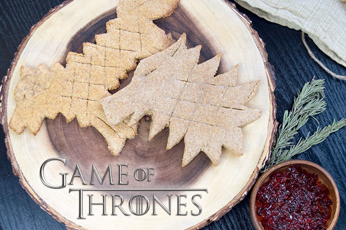

Direwolf Bread

Make your very own delicious sweet bread dessert, inspired by Hot Pie, the best cook in Westeros. Yours may not come out quite as delicious, but hey there's only one Hot Pie after all.
Ingredients
- Wheat Flour
- Corn Meal
- Buttermilk
- Butter
- Honey
- Baking Powder
- Baking Soda
- Egg + Water (for egg wash)
- Salt
- Sugar (optional)
- Pepper Jelly (for serving)
Steps
- Start by blending butter, wheat flour, cornmeal, and honey to create a crumbly base.
- Add your baking soda and baking powder to the mix. Want to go the sweet route? Add a tablespoon of sugar. Otherwise, if salt is more your thing, a teaspoon of salt will do the trick.
- Slowly pour in the buttermilk until your dough is thick yet smooth.
- Optional: Let the dough chill for about an hour. Makes it easier to roll out, just like a winter in Winterfell.
- Roll out the dough till it’s about a quarter to a half-inch thick. Use a template for the direwolf shape or freestyle your own shape. Direwolf Shape Template
- Bake at 350°F for roughly 20 minutes or until the bread turns as golden as a Lannister's locks
- You're finished! Serve it in your own unique way. Can't go wrong with rosemary-infused butter and some pepper jelly, but there are a million variations out there.
{kind=link}